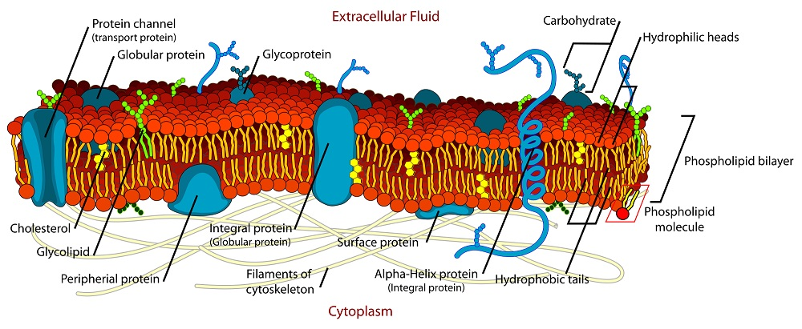

<!--
@license
Copyright (c) 2016 The Polymer Project Authors. All rights reserved.
This code may only be used under the BSD style license found at http://polymer.github.io/LICENSE.txt
The complete set of authors may be found at http://polymer.github.io/AUTHORS.txt
The complete set of contributors may be found at http://polymer.github.io/CONTRIBUTORS.txt
Code distributed by Google as part of the polymer project is also
subject to an additional IP rights grant found at http://polymer.github.io/PATENTS.txt
-->

<link rel="import" href="../bower_components/polymer/polymer-element.html">
<link rel="import" href="../bower_components/paper-card/paper-card.html">
<link rel="import" href="../bower_components/iron-flex-layout/iron-flex-layout-classes.html">
<link rel="import" href="shared-styles.html">

<dom-module id="my-view10">
  <template>
    <style include="shared-styles">
		:host {
			display: block;
			padding: 10px;
		}	
	  
		.flex {
			@apply --layout-vertical;
			@apply --layout-wrap;
		}
		
		.card{			
			margin: 10px;
		}
		
		.red{
			background: red;
			color: white;
		}
		
		.blue{
			background: blue;
			color: white;
		}
    </style>

    <div class="card">
		<h1>Cell Membrane</h1>
		<div class="card-content flex">
			
			<hr>
			<p>
			The cell membrane (also known as the plasma membrane or cytoplasmic membrane, and historically referred to as the plasmalemma) is a biological membrane that separates the interior of all cells from the outside environment (the extracellular space). It consists of a lipid bilayer with embedded proteins. The basic function of the cell membrane is to protect the cell from its surroundings. The cell membrane controls the movement of substances in and out of cells and organelles. In this way, it is selectively permeable to ions and organic molecules. In addition, cell membranes are involved in a variety of cellular processes such as cell adhesion, ion conductivity and cell signalling and serve as the attachment surface for several extracellular structures, including the cell wall, the carbohydrate layer called the glycocalyx, and the intracellular network of protein fibers called the cytoskeleton. In the field of synthetic biology, cell membranes can be artificially reassembled.
			</p>
		</div>
    </div>
  </template>

  <script>
    class MyView10 extends Polymer.Element {
      static get is() { return 'my-view10'; }
    }

    window.customElements.define(MyView10.is, MyView10);
  </script>
</dom-module>
